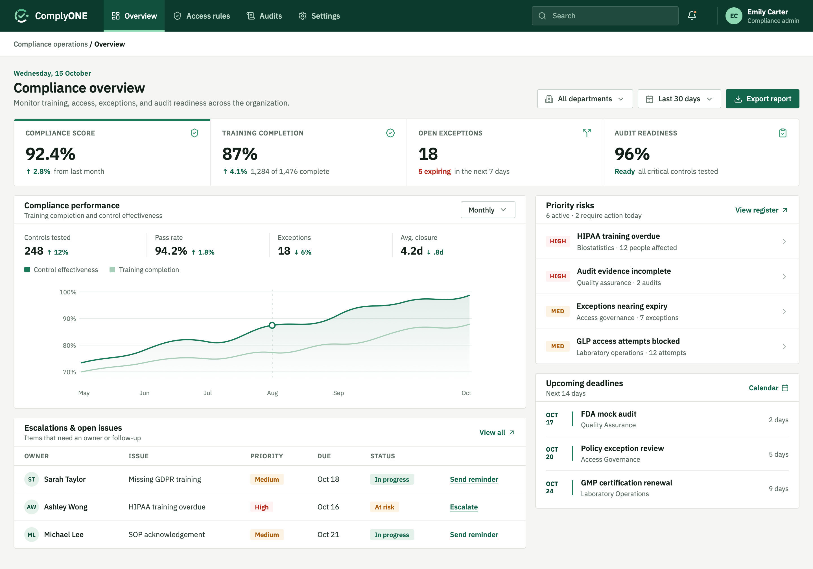

Pharmaceutical Company
ComplyOne
One or two sentences on what the product is, who it serves, and what you designed.
- Role
- Product Design
- Timeline
- 3 months
- Industry
- Pharmaceutical company
- Focus
- Your focus

01 · Project Overview
The Problem
Compliance teams lacked a reliable view of organizational audit readiness. Training gaps, incorrect system access, unresolved exceptions, and missing evidence were often discovered too close to an audit, creating operational disruption and regulatory risk.
The Solution
ComplyOne continuously evaluates audit readiness by connecting employee roles, training requirements, system permissions, exceptions, and compliance evidence. It provides compliance leaders with a centralized and actionable view of readiness before an audit begins.
The Impact
The solution transformed audit preparation from a reactive and fragmented exercise into a continuous, structured, and traceable operating model. Teams could assess readiness earlier, coordinate remediation more effectively, and enter audits with greater confidence.
My Role
I led the product design process across discovery, research synthesis, journey mapping, workflow definition, information architecture, prototyping, and validation. I translated complex compliance requirements into a coherent product strategy and aligned cross-functional stakeholders around a scalable vision for continuous audit readiness.
02 · Solution
Four screens carry compliance work from spotting a risk to controlling who gets access.
Created to give compliance teams one view of training, access, exceptions, and audit readiness, with the risks that need action surfaced first.

Created to turn a flagged risk into an owned response, with impact, exposure, and a suggested action plan in one place.
Created to tie each regulated system to the training it requires, so access is granted only once requirements are met.

Created to keep exceptions visible and time-bound, each with a named approver, an expiry, and a recorded justification.
03 · Discovery
Control Gaps
Compliance had to follow certain industry standards but they were not able to monitor compliance due to fragmented systems leading to lack of visibility of what was going wrong.
Stakeholder Interviews
I wanted to better understand the problem, so I worked with researchers to identify and shortlist key people to interview, which included compliance managers, IT specialists, and HR professionals across the company.
- Total25Stakeholders interviewed
- 15Compliance Managers
- 5IT Specialists
- 5HR Professionals
Scope & Prioritization
I converted the research into two strategic product priorities: policy-driven access governance and centralized readiness visibility. This focused the three-month engagement on the highest-risk control failures while establishing a scalable foundation for broader compliance operations.
Key learnings that shaped the product vision
-
Premature System AccessSystem access was granted before training completion due to disconnected HR, IT, and Training systems.PriorityPolicy-driven access governance
-
Limited Risk VisibilityScattered data made it hard for managers to see and address risks.PriorityCentralized readiness visibility
Design challengeHow might we create a connected workflow that ensures every compliance action is visible, owned, and verifiable before an audit?
04 · ComplyOne Platform
A walkthrough of the ComplyOne platform.
Role Based Access
How access is scoped by role, and the decision behind it.

Starts every rule from a role, so access is defined by what someone does rather than by who they are.
Maps each regulated system to the training it requires, so the rule reads as a simple role-by-system checklist.
Decides what happens when training is incomplete, from blocking access outright to alerting the manager.
Commits the rule and sums up exactly what it enforces, so the admin can confirm it before it takes effect.
Exception Governance
How exceptions are raised, reviewed, and tracked.
Keeps exceptions next to the rule they bend, so an admin raises one from the same place the rule is set.
Makes every exception temporary and accountable, with a named approver, an expiry, and a recorded business reason.
AI Powered Compliance Dashboard
What the dashboard surfaces and how AI helps teams act on it.
Ranks the risks that need attention today, so a compliance manager knows where to start.
Opening a risk brings up AI recommended actions to help prevent it, with an owner, the exposure, and a step-by-step plan.
05 · Impact
With roles, access rules, and exceptions governed in one place, fewer employees and managers ran into access problems they had to escalate.
06 · Reflection
Key learning
Balance Control With Workflow Efficiency
Enterprise tools must enforce policies without slowing down employees, managers, and compliance teams.
What I’d improve
Add Proactive Compliance Reminders
Alert compliance managers about pending approvals, expiring exceptions, and overdue access reviews.